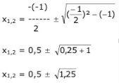
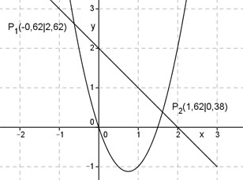

Aufgabe 32 In welchen Punkten schneiden sich die Parabel y = 2x2 - 3x und die Gerade y = -x + 2? Rechnerische Lösung: Gleichsetzen: 2x2 - 3x = -x + 2 |+x 2x2 - 2x = 2 |-2 2x2 - 2x - 2 = 0 |:2 x2 - x - 1 = 0 |:2 p, q - Formel: p = -1 ; q = -1  x1,2 = 0,5 ± 1,12 x1 = 0,5 - 1,12 = -0,62 y1 = -(-0,62) + 2 = 2,62 x2 = 0,5 + 1,12 = 1,62 y2 = -1,62 + 2 = 0,38 P1(-0,62|2,62) ; P2(1,62|0,38) 